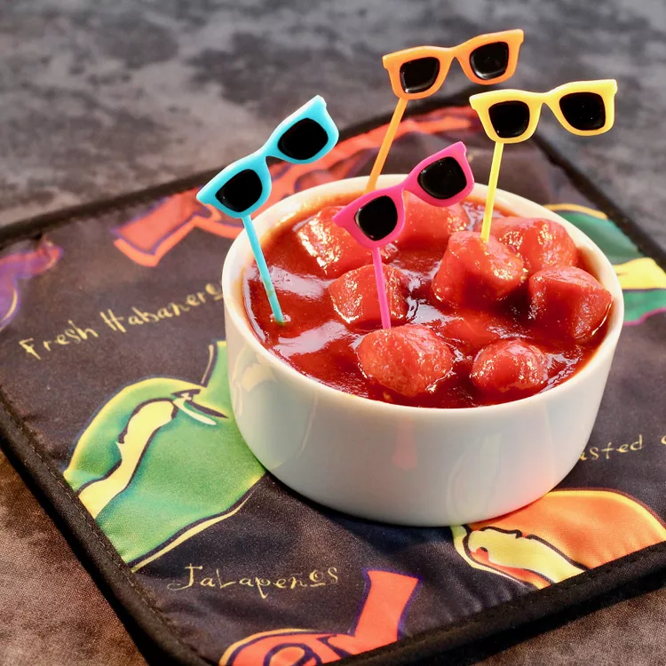

Siracha
Saucy Sriracha Franks
A little heat, a little sweet, and a little Asian. Serve with toothpicks, and you have a one-bite appetizer that is so very simple to make.
Ingredients
- 1 cup ketchup
- 1/4 cup soy sauce
- 1/4 rice vinegar
- 3 tablesspoons siracha sauce
- Mix ketchup, soy sauce, vinegar, sriracha, brown sugar, sesame oil, ginger, and garlic in a saucepan and bring to a simmer over low heat. Add franks and heat until warm, about 5 minutes. Serve with toothpicks.